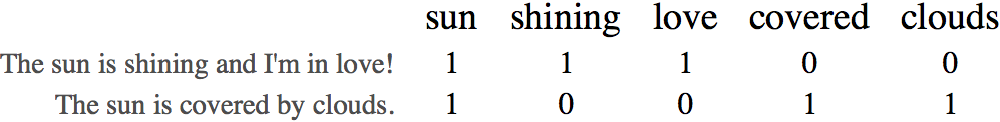

Shiladitya Chakraborty and Erin Craig
Every day, Paralign community members connect with one another by sharing what’s on their mind. So we wondered: as a whole, what does the Paralign community talk about?
To answer this question, we used a tool called topic modeling
. The goal of topic modeling is to convert text into a mixture of its topics or themes. For example, the phrase The sun is shining and I’m in love!
might be represented as 60% about love
and 40% about day
.
So, how do we break text into its topics? We start simply: we count the words that appear in each text. For example, the texts:
The sun is shining and I’m in love!
The sun is covered by clouds.
would become:

Then, for each word and text combination, we compute how many times that word appears in that text divided by the number of times the word appears in all the texts. This gives us a measure of how frequently each word appears in each text, relative to how commonly used the word is across all the texts. So, we update our table: we divide the counts for the word sun
by 2, which is the number of times the word sun
appears total in all texts. (The rest of the table remains the same, as all other words appear just once.)
The table we have just made is called the term frequency-inverse document frequency matrix (TF-IDF).This matrix has the texts and word frequencies, but what we really want is a matrix of texts and topics. So, we think of our TF-IDF matrix as holding hidden
information about topics. To get at the hidden
topic information, we break the TF-IDF matrix into a product of two matrices: one matrix will hold texts and topics, and the other matrix will hold topics and words.
We break our TF-IDF matrix into a product of two matrices using a technique called Non-negative Matrix Factorization, or NMF.
Here is an example of our topic modeling in action, using examples from the Paralign community and visualized with pyLDAvis.
The top topics are: 'life', 'good', 'love', 'feel', 'day'
Moods and thoughts are related to one another; for example, a challenging day likely
causes a bad mood. So, we repeated our topic modeling looking at thoughts grouped
by mood. For example, we looked at the topics generated by people who reported
their mood as happy
, nervous
, and so on. Our results were not surprising: the
most prevalent words and topics within the sad
mood include tired
, miss
, and lonely
,
while for happy
moods, we find words like happy
, and good
.
So far, we looked only and individual words and ignored the arrangement of words
within the texts. For instance: I am wrong.
and Am I wrong?
have different
meanings, even though they have exactly the same words. So instead of looking
for topics generated by single words, we looked for topics generated by two-word
phrases, called bigrams
.